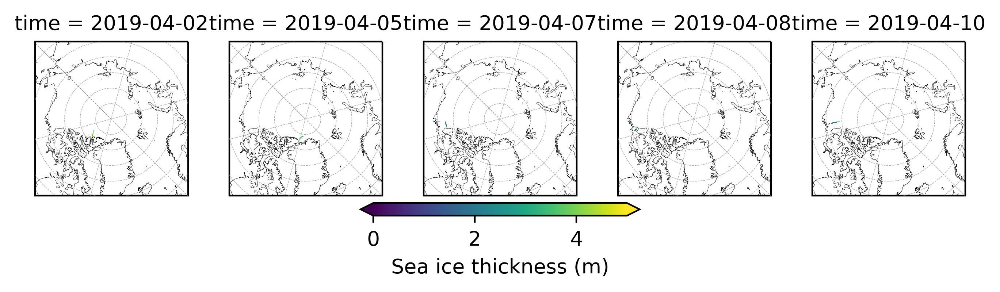
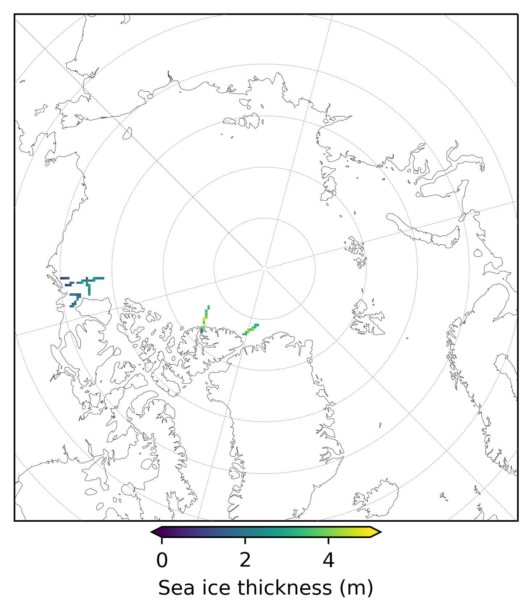
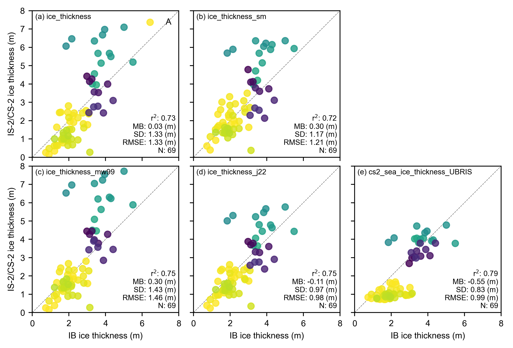
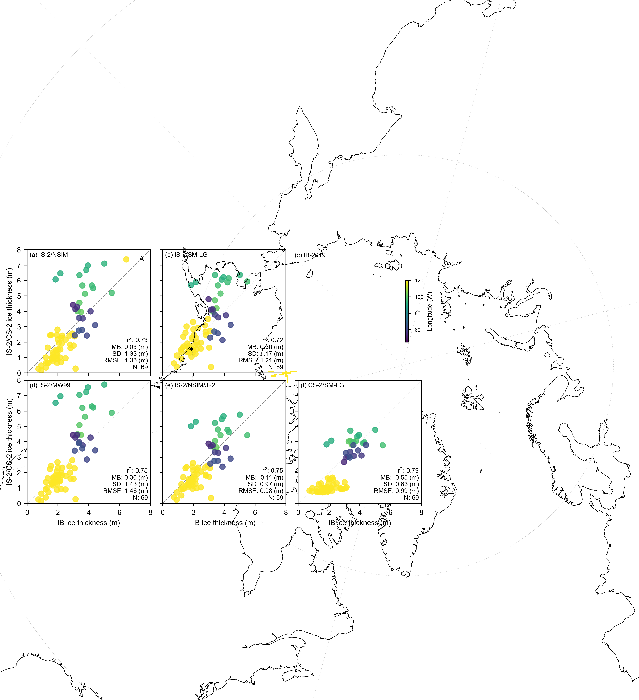
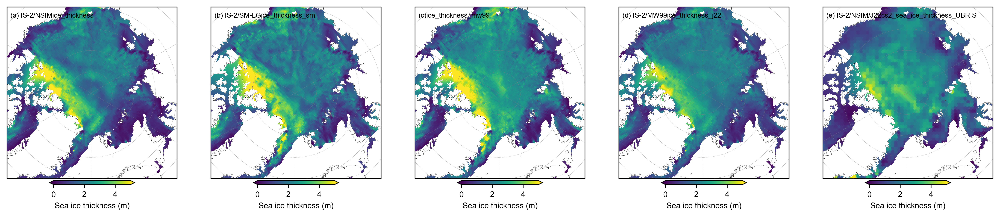
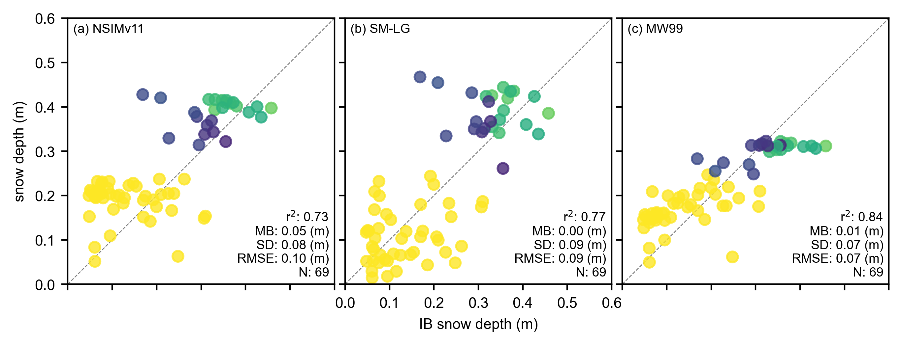
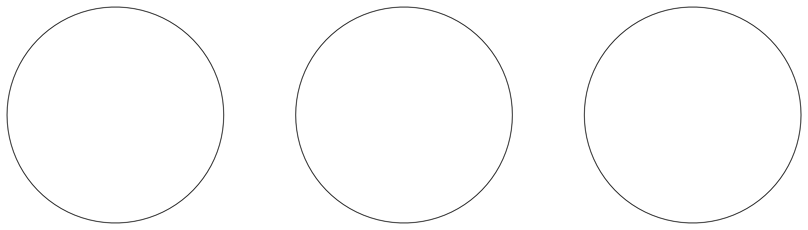

Comparisons with BGEP ULS sea ice draft estimates updated with new data#
Summary: In this notebook, we produce comparisons of the gridded ICESat-2 sea ice thickness data with draft measurements obtained from Upward Looking Sonar moorings deployed in the Beaufort Sea.
Version history: Version 1 (01/01/2022)
Import notebook dependencies#
import xarray as xr
import pandas as pd
import numpy as np
import itertools
import pyproj
from netCDF4 import Dataset
import scipy.interpolate
from utils.read_data_utils import read_book_data, read_IS2SITMOGR4 # Helper function for reading the data from the bucket
from utils.plotting_utils import compute_gridcell_winter_means, interactiveArcticMaps, interactive_winter_mean_maps, interactive_winter_comparison_lineplot # Plotting
from scipy import stats
import datetime
# Plotting dependencies
import cartopy.crs as ccrs
from textwrap import wrap
import hvplot.pandas
import holoviews as hv
import matplotlib.pyplot as plt
from matplotlib.axes import Axes
from cartopy.mpl.geoaxes import GeoAxes
GeoAxes._pcolormesh_patched = Axes.pcolormesh # Helps avoid some weird issues with the polar projection
%config InlineBackend.figure_format = 'retina'
import matplotlib as mpl
# Interpolating/smoothing packages
from scipy.interpolate import griddata
from scipy.spatial import KDTree
from astropy.convolution import convolve
from astropy.convolution import Gaussian2DKernel
mpl.rcParams['figure.dpi'] = 200 # Sets figure size in the notebook
# Remove warnings to improve display
import warnings
warnings.filterwarnings('ignore')
grid_size=25
ib_agg_str='mean'
# Define the variables to compare
variables_ice = [
'ice_thickness',
'ice_thickness_sm',
'ice_thickness_mw99',
'ice_thickness_j22',
'cs2_sea_ice_thickness_UBRIS'
]
# Define the variables to compare
variables_snow = [
'snow_depth',
'snow_depth_sm',
'snow_depth_mw99',
]
variables_all = variables_ice+variables_snow
IS2SITMOGR4_v3 = read_IS2SITMOGR4(data_type='zarr-s3', persist=True)
IS2SITMOGR4_v3
load zarr from S3 bucket
zarr_path: s3://icesat-2-sea-ice-us-west-2/IS2SITMOGR4_V3/IS2SITMOGR4_V3_201811-202404.zarr
<xarray.Dataset>
Dimensions: (time: 46, y: 448, x: 304)
Coordinates:
latitude (y, x) float32 31.1 31.2 ... 34.58 34.47
longitude (y, x) float32 168.3 168.1 ... -10.18 -9.999
* time (time) datetime64[ns] 2018-11-01 ... 2024...
* x (x) float32 -3.838e+06 ... 3.738e+06
* y (y) float32 5.838e+06 ... -5.338e+06
Data variables: (12/27)
crs (time) int32 dask.array<chunksize=(46,), meta=np.ndarray>
freeboard (time, y, x) float32 dask.array<chunksize=(1, 448, 304), meta=np.ndarray>
freeboard_int (time, y, x) float32 dask.array<chunksize=(1, 448, 304), meta=np.ndarray>
ice_density (time, y, x) float32 dask.array<chunksize=(1, 448, 304), meta=np.ndarray>
ice_density_j22 (time, y, x) float32 dask.array<chunksize=(1, 448, 304), meta=np.ndarray>
ice_thickness (time, y, x) float32 dask.array<chunksize=(1, 448, 304), meta=np.ndarray>
... ...
snow_density_sm (time, y, x) float32 dask.array<chunksize=(1, 448, 304), meta=np.ndarray>
snow_density_w99 (time, y, x) float32 dask.array<chunksize=(1, 448, 304), meta=np.ndarray>
snow_depth (time, y, x) float32 dask.array<chunksize=(1, 448, 304), meta=np.ndarray>
snow_depth_int (time, y, x) float32 dask.array<chunksize=(1, 448, 304), meta=np.ndarray>
snow_depth_mw99 (time, y, x) float32 dask.array<chunksize=(1, 448, 304), meta=np.ndarray>
snow_depth_sm (time, y, x) float32 dask.array<chunksize=(1, 448, 304), meta=np.ndarray>
Attributes:
contact: Alek Petty (akpetty@umd.edu)
description: Aggregated IS2SITMOGR4 V3 dataset.
history: Created 28/11/23
reference: Official NSIDC data doi: 10.5067/CV6JEXEE31HF. Derived data...out_proj = 'EPSG:3411'
out_lons = IS2SITMOGR4_v3.longitude.values
out_lats = IS2SITMOGR4_v3.latitude.values
mapProj = pyproj.Proj("+init=" + out_proj)
xptsIS2, yptsIS2 = mapProj(out_lons, out_lats)
def getCS2ubris(mapProj, dataPathCS2, dataset):
""" Read in the University of Bristol CryoSat-2 sea ice thickness data
Args:
dataPathCS2 (str): location of data
Returns
xptsT (2d numpy array): x coordinates on our map projection
yptsT (2d numpy array): y coordinates on our map projection
thicknessCS (2d numpy array): monthly sea ice thickness estimates
"""
ubris_f = xr.open_dataset(dataPathCS2+dataset, decode_times=False)
# Issue with time starting from year 0!
# Re-set it to start from some other year
ubris_f = ubris_f.rename({'Time':'time'})
ubris_f['time'] = ubris_f['time']-679352
ubris_f.time.attrs["units"] = "days since 1860-01-01"
decoded_time = xr.decode_cf(ubris_f)
ubris_f['time']=decoded_time.time
ubris_f = ubris_f.swap_dims({'t': 'time'})
# Resample to monthly, note that the S just makes the index start on the 1st of the month
thicknessCS = ubris_f.resample(time="MS").mean()
xptsT, yptsT = mapProj(thicknessCS.isel(time=0).Longitude, thicknessCS.isel(time=0).Latitude)
return xptsT, yptsT, thicknessCS
def regridToICESat2(dataArrayNEW, xptsNEW, yptsNEW, xptsIS2, yptsIS2):
""" Regrid new data to ICESat-2 grid
Args:
dataArrayNEW (xarray DataArray): Numpy variable array to be gridded to ICESat-2 grid
xptsNEW (numpy array): x-values of dataArrayNEW projected to ICESat-2 map projection
yptsNEW (numpy array): y-values of dataArrayNEW projected to ICESat-2 map projection
xptsIS2 (numpy array): ICESat-2 longitude projected to ICESat-2 map projection
yptsIS2 (numpy array): ICESat-2 latitude projected to ICESat-2 map projection
Returns:
gridded (numpy array): data regridded to ICESat-2 map projection
"""
#gridded = []
#for i in range(len(dataArrayNEW.values)):
gridded = scipy.interpolate.griddata((xptsNEW.flatten(),yptsNEW.flatten()), dataArrayNEW.flatten(), (xptsIS2, yptsIS2), method = 'nearest')
try:
gridded = scipy.interpolate.griddata((xptsNEW.flatten(),yptsNEW.flatten()), dataArrayNEW.flatten(), (xptsIS2, yptsIS2), method = 'nearest')
except:
try:
gridded = scipy.interpolate.griddata((xptsNEW,yptsNEW), dataArrayNEW, (xptsIS2, yptsIS2), method = 'nearest')
except:
print('Error interpolating..')
return gridded
def regrid_ubris_is2(mapProj, xptsIS2, yptsIS2, out_lons, out_lats, date_range, dataPathCS2='/home/jovyan/Data/CS2/UIT/', dataset='ubristol_cryosat2_seaicethickness_nh_80km_v1p7.nc'):
cs2_ubris = []
valid_dates=[]
xptsT_ubris, yptsT_ubris, cs2_ubris_raw = getCS2ubris(mapProj, dataPathCS2, dataset)
for date in date_range:
try:
cs2_ubris_temp_is2grid = regridToICESat2(cs2_ubris_raw.Sea_Ice_Thickness.sel(time=date).values, xptsT_ubris, yptsT_ubris, xptsIS2, yptsIS2)
ice_conc_is2grid = regridToICESat2(cs2_ubris_raw.Sea_Ice_Concentration.sel(time=date).values, xptsT_ubris, yptsT_ubris, xptsIS2, yptsIS2)
#cs2_ubris_temp_is2grid[ice_conc_is2grid<0.5]=np.nan
cs2_ice_type_is2grid = regridToICESat2(cs2_ubris_raw.Sea_Ice_Type.sel(time=date).values, xptsT_ubris, yptsT_ubris, xptsIS2, yptsIS2)
except:
print(date)
print('no CS-2 data or issue with gridding, so skipping...')
continue
valid_dates.append(date)
#cs2_ubris_temp_is2grid_xr = xr.DataArray(data = cs2_ubris_temp_is2grid,
# dims = ['y', 'x'],
# coords = {'latitude': (('y','x'), out_lats), 'longitude': (('y','x'), out_lons), 'x': (('x'), IS2SITMOGR4_v3.x.values), 'y': (('y'), IS2SITMOGR4_v3.y.values)},
# name = 'cs2_sea_ice_thickness_UBRIS')
cs2_ubris_temp_is2grid_xr = xr.Dataset({'cs2_sea_ice_thickness_UBRIS': (('y', 'x'), cs2_ubris_temp_is2grid),
'cs2_sea_ice_type_UBRIS': (('y', 'x'), cs2_ice_type_is2grid)},
coords = {'latitude': (('y','x'), out_lats), 'longitude': (('y','x'), out_lons), 'x': (('x'), IS2SITMOGR4_v3.x.values), 'y': (('y'), IS2SITMOGR4_v3.y.values)}
)
cs2_ubris.append(cs2_ubris_temp_is2grid_xr)
cs2_ubris = xr.concat(cs2_ubris, 'time')
#cs2_ubris = cs2_ubris.assign_coords(time=valid_dates)
cs2_ubris_attrs = {'units': 'meters', 'long_name': 'University of Bristol CryoSat-2 Arctic sea ice thickness', 'data_download': 'https://data.bas.ac.uk/full-record.php?id=GB/NERC/BAS/PDC/01613',
'download_date': '09-2022', 'citation': 'Landy, J.C., Dawson, G.J., Tsamados, M. et al. A year-round satellite sea-ice thickness record from CryoSat-2. Nature 609, 517–522 (2022). https://doi.org/10.1038/s41586-022-05058-5'}
cs2_ubris = cs2_ubris.assign_coords(time=valid_dates)
cs2_ubris = cs2_ubris.assign_attrs(cs2_ubris_attrs)
return cs2_ubris
start_date_cs2 = "Nov 2018"
end_date_cs2 = "July 2021"
# MS indicates a time frequency of start of the month
date_range_cs2 = pd.date_range(start=start_date_cs2, end=end_date_cs2, freq='MS')
cs2_ubris = regrid_ubris_is2(mapProj, xptsIS2, yptsIS2, out_lons, out_lats, date_range_cs2,
dataPathCS2='/Users/akpetty/Data/CS2/', dataset='uit_cryosat2_seaicethickness_nh_80km_v1p7.nc')
IS2SITMOGR4_v3 = IS2SITMOGR4_v3.merge(cs2_ubris)
IS2SITMOGR4_v3 = IS2SITMOGR4_v3.sel(time='2019-04-01')
# Interpolation settings
method = "linear"
# Create a new dataset to store the interpolated values
IS2SITMOGR4_v3_int = xr.Dataset()
for var in variables_all:
# Perform linear interpolation
is2_to_interp = IS2SITMOGR4_v3[var].values.copy()
is2_to_interp[np.where(IS2SITMOGR4_v3.sea_ice_conc<0.15)] = 0 # Set 15% conc or less to 0 thickness
np_interpolated = griddata((xptsIS2[(np.isfinite(is2_to_interp))],
yptsIS2[(np.isfinite(is2_to_interp))]),
is2_to_interp[(np.isfinite(is2_to_interp))].flatten(),
(xptsIS2, yptsIS2),
fill_value=np.nan,
method=method)
np_interpolated[~(np.isfinite(IS2SITMOGR4_v3.sea_ice_conc))]=np.nan # Remove thickness data where cdr data is nan
np_interpolated[np.where(IS2SITMOGR4_v3.sea_ice_conc<0.5)]=np.nan # Remove thickness data where cdr data < 50% concentration
x_stddev=0.5
kernel = Gaussian2DKernel(x_stddev=x_stddev)
np_interpolated_gauss = convolve(np_interpolated, kernel)
np_interpolated_gauss[~(np.isfinite(IS2SITMOGR4_v3.sea_ice_conc))]=np.nan # Remove thickness data where cdr data is nan
np_interpolated_gauss[np.where(IS2SITMOGR4_v3.sea_ice_conc<0.5)]=np.nan # Remove thickness data where cdr data < 50% concentration
# Add the interpolated data to the new dataset
IS2SITMOGR4_v3_int[var] = (('y', 'x'), np_interpolated_gauss)
# Add latitude and longitude coordinates to the new dataset
IS2SITMOGR4_v3_int = IS2SITMOGR4_v3_int.assign_coords({
'latitude': (('y', 'x'), IS2SITMOGR4_v3.latitude.values),
'longitude': (('y', 'x'), IS2SITMOGR4_v3.longitude.values)
})
IS2SITMOGR4_v3 = IS2SITMOGR4_v3_int
IS2SITMOGR4_v3
<xarray.Dataset>
Dimensions: (y: 448, x: 304)
Coordinates:
latitude (y, x) float32 31.1 31.2 31.3 ... 34.58 34.47
longitude (y, x) float32 168.3 168.1 ... -10.18 -9.999
Dimensions without coordinates: y, x
Data variables:
ice_thickness (y, x) float64 nan nan nan nan ... nan nan nan
ice_thickness_sm (y, x) float64 nan nan nan nan ... nan nan nan
ice_thickness_mw99 (y, x) float64 nan nan nan nan ... nan nan nan
ice_thickness_j22 (y, x) float64 nan nan nan nan ... nan nan nan
cs2_sea_ice_thickness_UBRIS (y, x) float64 nan nan nan nan ... nan nan nan
snow_depth (y, x) float64 nan nan nan nan ... nan nan nan
snow_depth_sm (y, x) float64 nan nan nan nan ... nan nan nan
snow_depth_mw99 (y, x) float64 nan nan nan nan ... nan nan nan# COARSEN TO MATCH 100 KM RESOLUTION OF IB
if grid_size==100:
IS2SITMOGR4_v3 = IS2SITMOGR4_v3.coarsen(y=4, x=4, boundary='trim').mean()
IS2SITMOGR4_v3
# Open the NetCDF file
# Replace 'path/to/your/file.nc' with the actual path to your NetCDF file
file_path = '/Users/akpetty/Data/IS2-obs-comparison-data/icebird_on_is2_grid_'+str(grid_size)+'km_test1.nc'
dataset = xr.open_dataset(file_path)
dataset = dataset.rename({'date': 'time'})
dataset = dataset.transpose('y', 'x', 'time')
# Display the dataset
print(dataset)
<xarray.Dataset>
Dimensions: (x: 304, y: 448, time: 5)
Coordinates:
lon (y, x) float64 ...
lat (y, x) float64 ...
* x (x) float64 -3.838e+06 -3.812e+06 ... 3.738e+06
* y (y) float64 5.838e+06 5.812e+06 ... -5.338e+06
* time (time) datetime64[ns] 2019-04-02 ... 2019-04-10
crs int32 ...
Data variables:
sea_ice_thickness_mean (y, x, time) float64 ...
sea_ice_thickness_median (y, x, time) float64 ...
sea_ice_thickness_mode (y, x, time) float64 ...
sea_ice_thickness_count (y, x, time) float64 ...
snow_thickness_mean (y, x, time) float64 ...
snow_thickness_median (y, x, time) float64 ...
snow_thickness_mode (y, x, time) float64 ...
snow_thickness_count (y, x, time) float64 ...
IS2SITMOGR4_v3
<xarray.Dataset>
Dimensions: (y: 448, x: 304)
Coordinates:
latitude (y, x) float32 31.1 31.2 31.3 ... 34.58 34.47
longitude (y, x) float32 168.3 168.1 ... -10.18 -9.999
Dimensions without coordinates: y, x
Data variables:
ice_thickness (y, x) float64 nan nan nan nan ... nan nan nan
ice_thickness_sm (y, x) float64 nan nan nan nan ... nan nan nan
ice_thickness_mw99 (y, x) float64 nan nan nan nan ... nan nan nan
ice_thickness_j22 (y, x) float64 nan nan nan nan ... nan nan nan
cs2_sea_ice_thickness_UBRIS (y, x) float64 nan nan nan nan ... nan nan nan
snow_depth (y, x) float64 nan nan nan nan ... nan nan nan
snow_depth_sm (y, x) float64 nan nan nan nan ... nan nan nan
snow_depth_mw99 (y, x) float64 nan nan nan nan ... nan nan nanfig_width=6.8
fig_height=5.4
im1 = dataset.sea_ice_thickness_mean.plot(x="lon", y="lat", col='time', transform=ccrs.PlateCarree(),
cmap="viridis", zorder=3, add_labels=False,
subplot_kws={'projection':ccrs.NorthPolarStereo(central_longitude=-45)},
cbar_kwargs={'pad':0.01,'shrink': 0.3,'extend':'both',
'label':'Sea ice thickness (m)', 'location':'bottom'},
vmin=0, vmax=5,
figsize=(fig_width, fig_height))
# Add map features to all subplots
i=0
for i, ax in enumerate(im1.axes.flatten()):
ax.coastlines(linewidth=0.15, color='black', zorder=2)
#ax.add_feature(cfeature.LAND, color='0.95', zorder=1)
ax.gridlines(draw_labels=False, linewidth=0.25, color='gray', alpha=0.7, linestyle='--', zorder=3)
ax.set_extent([-179, 179, 65, 90], crs=ccrs.PlateCarree())
#ax.text(0.02, 0.93, panel_letters[i], transform=ax.transAxes, fontsize=7, va='bottom', ha='left')
#ax.set_title('', fontsize=8)
i+=1
#plt.subplots_adjust(wspace=0.01)
#plt.savefig('./figs/maps_summer_thickness_comparison.png', dpi=300, facecolor="white")
plt.show()
plt.close()

fig_width=6.8
fig_height=5.4
im1 = dataset.sea_ice_thickness_mean.mean(dim='time').plot(x="lon", y="lat", transform=ccrs.PlateCarree(),
cmap="viridis", zorder=3, add_labels=False,
subplot_kws={'projection':ccrs.NorthPolarStereo(central_longitude=-45)},
cbar_kwargs={'pad':0.01,'shrink': 0.3,'extend':'both',
'label':'Sea ice thickness (m)', 'location':'bottom'},
vmin=0, vmax=5,
figsize=(fig_width, fig_height))
# Add map features to the single subplot
ax = im1.axes # Access the single axis object
ax.coastlines(linewidth=0.15, color='black', zorder=2)
ax.gridlines(draw_labels=False, linewidth=0.25, color='gray', alpha=0.7, linestyle='--', zorder=3)
ax.set_extent([-179, 179, 65, 90], crs=ccrs.PlateCarree())
#plt.subplots_adjust(wspace=0.01)
plt.savefig('./figs/IBmap_all'+str(grid_size)+'km.png', dpi=300, facecolor="white")
plt.show()
plt.close()

dataset
<xarray.Dataset>
Dimensions: (x: 304, y: 448, time: 5)
Coordinates:
lon (y, x) float64 ...
lat (y, x) float64 ...
* x (x) float64 -3.838e+06 -3.812e+06 ... 3.738e+06
* y (y) float64 5.838e+06 5.812e+06 ... -5.338e+06
* time (time) datetime64[ns] 2019-04-02 ... 2019-04-10
crs int32 ...
Data variables:
sea_ice_thickness_mean (y, x, time) float64 ...
sea_ice_thickness_median (y, x, time) float64 ...
sea_ice_thickness_mode (y, x, time) float64 ...
sea_ice_thickness_count (y, x, time) float64 ...
snow_thickness_mean (y, x, time) float64 ...
snow_thickness_median (y, x, time) float64 ...
snow_thickness_mode (y, x, time) float64 ...
snow_thickness_count (y, x, time) float64 ...# Initialize a dictionary to store validation results
validation_results = {}
# Calculate statistics and generate scatter plots for each variable
for var in variables_ice:
# Calculate statistics
IS2_var = IS2SITMOGR4_v3[var]
IB_var = dataset['sea_ice_thickness_'+ib_agg_str].mean(dim='time')
IB_lon = dataset['lon']
valid_mask = ~np.isnan(IS2_var.values) & ~np.isnan(IB_var.values)
IB_comps=IB_var.where(valid_mask).values.flatten()[~np.isnan(IB_var.where(valid_mask).values.flatten())]
IB_lon=IB_lon.where(valid_mask).values.flatten()[~np.isnan(IB_var.where(valid_mask).values.flatten())]*-1.
IS2_comps=IS2_var.where(valid_mask).values.flatten()[~np.isnan(IS2_var.where(valid_mask).values.flatten())]
# Correlation Coeff
correlation = '%.02f' % (np.corrcoef(IS2_comps, IB_comps)[0, 1])
# Calculate mean bias
mean_bias = '%.02f' % (np.mean(IS2_comps - IB_comps))
# Calculate standard dev of differences
std_dev = '%.02f' % (np.std(IS2_comps - IB_comps))
# Calculate RMSE
rmse = '%.02f' % (np.sqrt(np.mean((IS2_comps - IB_comps) ** 2)))
# Store results
validation_results[var] = {
'r_str': correlation, 'mb_str': mean_bias, 'sd_str': std_dev,
'rmse': rmse, 'IB_comps': IB_comps, 'IS2_comps': IS2_comps,
'IB_lon': IB_lon
}
# Print validation results
print(validation_results)
{'ice_thickness': {'r_str': '0.73', 'mb_str': '0.03', 'sd_str': '1.33', 'rmse': '1.33', 'IB_comps': array([0.73416306, 0.91414528, 1.21611728, 1.38616259, 1.33583568,
3.0204772 , 1.93318028, 2.22606366, 2.06051877, 2.26073723,
2.93433353, 1.55487528, 2.28648528, 1.97537913, 1.4844763 ,
2.4952963 , 1.68103248, 1.60913671, 1.91573577, 2.02489574,
2.78945771, 2.74967608, 0.91814694, 1.20431867, 1.31682411,
1.99337231, 3.08443821, 2.81557322, 2.15178505, 2.49001974,
1.94523891, 2.19834752, 1.94383033, 1.60093936, 1.75156833,
3.14286031, 2.13732968, 1.87778065, 1.69826966, 1.71906675,
1.69024859, 1.87237824, 1.21529962, 1.96244262, 3.49809066,
3.27976989, 3.39387525, 3.75805811, 3.58882883, 5.49732484,
4.21180687, 4.29279921, 3.39384525, 5.01003697, 3.12989524,
2.98259387, 3.83834743, 3.95294155, 3.60988401, 3.2522433 ,
2.15640955, 4.41373684, 3.38385622, 4.11487375, 1.84425494,
3.58281022, 3.88600183, 3.35329624, 3.09265207]), 'IS2_comps': array([0.25647712, 0.15932784, 0.34099417, 0.63326848, 1.64051148,
1.77463263, 2.45443684, 2.27689713, 1.95539853, 1.9053782 ,
2.54677009, 2.45589383, 2.41497828, 2.80607569, 2.43755958,
2.15722235, 0.78682041, 0.90902702, 1.30789768, 1.53332676,
1.82959502, 2.4183825 , 0.47528897, 0.63184323, 0.65130769,
2.17022829, 2.37494315, 1.60640106, 1.52121108, 0.94701346,
0.64946406, 0.67985442, 0.89794345, 0.98251937, 1.01484097,
0.27288856, 0.99605506, 0.98071634, 1.20441038, 0.99282198,
1.34225882, 1.47739061, 1.00348009, 1.16673815, 3.95277919,
4.00319573, 4.55554584, 5.13768708, 5.67221265, 5.19281411,
5.67157448, 5.49776922, 6.34787966, 7.09820634, 4.14019031,
4.42231125, 6.67972024, 6.97505328, 3.53173158, 4.27132017,
6.46604184, 3.09693524, 3.56374827, 3.99422298, 6.06757453,
2.78521188, 2.42017786, 2.74685192, 2.43564694]), 'IB_lon': array([132.70938996, 132.68293761, 132.65586753, 132.62815781,
132.3804512 , 132.27368901, 132.23614263, 132.19754848,
132.15786212, 132.11703655, 131.71911923, 131.67687955,
131.63353934, 131.58905504, 131.54338083, 131.49646836,
131.23147029, 131.18592517, 131.09145571, 131.04244689,
130.99219546, 130.88777116, 130.65254309, 130.60129465,
130.548826 , 130.14339607, 130.07938396, 129.32697786,
128.57652956, 127.82828783, 127.83276127, 127.74680539,
127.65877419, 127.56859203, 127.47617956, 127.08249697,
126.86989765, 126.7690249 , 126.17362905, 125.5946885 ,
125.03164383, 124.91183022, 124.48395362, 124.3593803 ,
102.68038349, 101.04094018, 100.53918373, 99.0394828 ,
97.59464337, 97.27500496, 96.2034479 , 95.94686305,
94.66685837, 93.43363036, 55.84030545, 53.47114463,
93.30186567, 92.24574257, 57.6525565 , 55.40771131,
92.16107949, 61.38954033, 59.30027745, 57.17145821,
91.06091169, 62.78388844, 60.80251395, 64.05770451,
62.17590362])}, 'ice_thickness_sm': {'r_str': '0.72', 'mb_str': '0.30', 'sd_str': '1.17', 'rmse': '1.21', 'IB_comps': array([0.73416306, 0.91414528, 1.21611728, 1.38616259, 1.33583568,
3.0204772 , 1.93318028, 2.22606366, 2.06051877, 2.26073723,
2.93433353, 1.55487528, 2.28648528, 1.97537913, 1.4844763 ,
2.4952963 , 1.68103248, 1.60913671, 1.91573577, 2.02489574,
2.78945771, 2.74967608, 0.91814694, 1.20431867, 1.31682411,
1.99337231, 3.08443821, 2.81557322, 2.15178505, 2.49001974,
1.94523891, 2.19834752, 1.94383033, 1.60093936, 1.75156833,
3.14286031, 2.13732968, 1.87778065, 1.69826966, 1.71906675,
1.69024859, 1.87237824, 1.21529962, 1.96244262, 3.49809066,
3.27976989, 3.39387525, 3.75805811, 3.58882883, 5.49732484,
4.21180687, 4.29279921, 3.39384525, 5.01003697, 3.12989524,
2.98259387, 3.83834743, 3.95294155, 3.60988401, 3.2522433 ,
2.15640955, 4.41373684, 3.38385622, 4.11487375, 1.84425494,
3.58281022, 3.88600183, 3.35329624, 3.09265207]), 'IS2_comps': array([0.61490978, 0.39725377, 0.92286376, 1.72824638, 2.34683249,
1.63415123, 2.18187556, 2.01071863, 1.78947567, 1.81576273,
3.49612468, 3.01062486, 2.91746232, 3.30657627, 2.59341587,
1.96271249, 1.72532147, 1.90177466, 2.30346316, 2.45871734,
2.6691014 , 3.08354294, 1.12421238, 1.51584085, 1.64163847,
2.8326686 , 2.71470603, 2.46232334, 2.27890241, 1.56691304,
1.53109028, 1.53568229, 1.46851995, 1.33518383, 1.29599846,
0.37413757, 1.23877179, 1.05662411, 1.62789131, 1.46145233,
1.32902883, 1.57468376, 1.35929983, 1.31522356, 4.20013464,
3.96572598, 4.70962049, 5.15224307, 5.67883542, 5.93580923,
5.8850609 , 6.1485249 , 6.35653718, 6.36224012, 4.10078957,
4.78729953, 6.05207222, 6.22241484, 3.60089761, 4.1293942 ,
5.89134417, 3.11256667, 3.78587941, 3.73611601, 5.68691755,
2.56926227, 2.13204769, 2.68727605, 2.28988001]), 'IB_lon': array([132.70938996, 132.68293761, 132.65586753, 132.62815781,
132.3804512 , 132.27368901, 132.23614263, 132.19754848,
132.15786212, 132.11703655, 131.71911923, 131.67687955,
131.63353934, 131.58905504, 131.54338083, 131.49646836,
131.23147029, 131.18592517, 131.09145571, 131.04244689,
130.99219546, 130.88777116, 130.65254309, 130.60129465,
130.548826 , 130.14339607, 130.07938396, 129.32697786,
128.57652956, 127.82828783, 127.83276127, 127.74680539,
127.65877419, 127.56859203, 127.47617956, 127.08249697,
126.86989765, 126.7690249 , 126.17362905, 125.5946885 ,
125.03164383, 124.91183022, 124.48395362, 124.3593803 ,
102.68038349, 101.04094018, 100.53918373, 99.0394828 ,
97.59464337, 97.27500496, 96.2034479 , 95.94686305,
94.66685837, 93.43363036, 55.84030545, 53.47114463,
93.30186567, 92.24574257, 57.6525565 , 55.40771131,
92.16107949, 61.38954033, 59.30027745, 57.17145821,
91.06091169, 62.78388844, 60.80251395, 64.05770451,
62.17590362])}, 'ice_thickness_mw99': {'r_str': '0.75', 'mb_str': '0.30', 'sd_str': '1.43', 'rmse': '1.46', 'IB_comps': array([0.73416306, 0.91414528, 1.21611728, 1.38616259, 1.33583568,
3.0204772 , 1.93318028, 2.22606366, 2.06051877, 2.26073723,
2.93433353, 1.55487528, 2.28648528, 1.97537913, 1.4844763 ,
2.4952963 , 1.68103248, 1.60913671, 1.91573577, 2.02489574,
2.78945771, 2.74967608, 0.91814694, 1.20431867, 1.31682411,
1.99337231, 3.08443821, 2.81557322, 2.15178505, 2.49001974,
1.94523891, 2.19834752, 1.94383033, 1.60093936, 1.75156833,
3.14286031, 2.13732968, 1.87778065, 1.69826966, 1.71906675,
1.69024859, 1.87237824, 1.21529962, 1.96244262, 3.49809066,
3.27976989, 3.39387525, 3.75805811, 3.58882883, 5.49732484,
4.21180687, 4.29279921, 3.39384525, 5.01003697, 3.12989524,
2.98259387, 3.83834743, 3.95294155, 3.60988401, 3.2522433 ,
2.15640955, 4.41373684, 3.38385622, 4.11487375, 1.84425494,
3.58281022, 3.88600183, 3.35329624, 3.09265207]), 'IS2_comps': array([0.25693015, 0.16583971, 0.38567472, 0.72488793, 1.63471396,
1.5888458 , 2.06928589, 1.9839328 , 1.85589753, 1.82979523,
2.80347239, 2.43229984, 2.31708824, 2.67408834, 2.22893977,
1.77774821, 1.16311441, 1.27024099, 1.64141071, 1.7891532 ,
1.99529 , 2.40083606, 0.63280535, 0.91509938, 0.99952673,
2.30872195, 2.27857756, 1.60944162, 1.51371189, 0.90584798,
0.88735997, 0.94513074, 1.24847355, 1.33870507, 1.42408331,
0.27593202, 1.43183183, 1.39992151, 1.64031644, 1.35129493,
1.69672197, 1.83875694, 1.37261276, 1.53789893, 4.45874239,
4.49458468, 5.09056566, 5.62940642, 6.2012959 , 5.88298511,
6.29727437, 6.2293963 , 7.04632624, 7.71746702, 4.27353145,
4.44212735, 7.23436312, 7.54368886, 3.78069157, 4.45068768,
6.96561973, 3.44754303, 3.97520581, 4.2745274 , 6.52840995,
3.57028931, 2.85179308, 3.90328693, 3.42855998]), 'IB_lon': array([132.70938996, 132.68293761, 132.65586753, 132.62815781,
132.3804512 , 132.27368901, 132.23614263, 132.19754848,
132.15786212, 132.11703655, 131.71911923, 131.67687955,
131.63353934, 131.58905504, 131.54338083, 131.49646836,
131.23147029, 131.18592517, 131.09145571, 131.04244689,
130.99219546, 130.88777116, 130.65254309, 130.60129465,
130.548826 , 130.14339607, 130.07938396, 129.32697786,
128.57652956, 127.82828783, 127.83276127, 127.74680539,
127.65877419, 127.56859203, 127.47617956, 127.08249697,
126.86989765, 126.7690249 , 126.17362905, 125.5946885 ,
125.03164383, 124.91183022, 124.48395362, 124.3593803 ,
102.68038349, 101.04094018, 100.53918373, 99.0394828 ,
97.59464337, 97.27500496, 96.2034479 , 95.94686305,
94.66685837, 93.43363036, 55.84030545, 53.47114463,
93.30186567, 92.24574257, 57.6525565 , 55.40771131,
92.16107949, 61.38954033, 59.30027745, 57.17145821,
91.06091169, 62.78388844, 60.80251395, 64.05770451,
62.17590362])}, 'ice_thickness_j22': {'r_str': '0.75', 'mb_str': '-0.11', 'sd_str': '0.97', 'rmse': '0.98', 'IB_comps': array([0.73416306, 0.91414528, 1.21611728, 1.38616259, 1.33583568,
3.0204772 , 1.93318028, 2.22606366, 2.06051877, 2.26073723,
2.93433353, 1.55487528, 2.28648528, 1.97537913, 1.4844763 ,
2.4952963 , 1.68103248, 1.60913671, 1.91573577, 2.02489574,
2.78945771, 2.74967608, 0.91814694, 1.20431867, 1.31682411,
1.99337231, 3.08443821, 2.81557322, 2.15178505, 2.49001974,
1.94523891, 2.19834752, 1.94383033, 1.60093936, 1.75156833,
3.14286031, 2.13732968, 1.87778065, 1.69826966, 1.71906675,
1.69024859, 1.87237824, 1.21529962, 1.96244262, 3.49809066,
3.27976989, 3.39387525, 3.75805811, 3.58882883, 5.49732484,
4.21180687, 4.29279921, 3.39384525, 5.01003697, 3.12989524,
2.98259387, 3.83834743, 3.95294155, 3.60988401, 3.2522433 ,
2.15640955, 4.41373684, 3.38385622, 4.11487375, 1.84425494,
3.58281022, 3.88600183, 3.35329624, 3.09265207]), 'IS2_comps': array([0.38944213, 0.24317889, 0.51678263, 0.95756452, 1.70513636,
1.72548356, 2.36262159, 2.2027991 , 1.9054197 , 1.91139941,
2.45095384, 2.36135732, 2.3218416 , 2.61440651, 2.28816132,
2.06216851, 1.08002997, 1.20643805, 1.54590124, 1.69441424,
1.86803058, 2.3283503 , 0.71014184, 0.9251487 , 0.96317086,
2.14861673, 2.29533055, 1.79895359, 1.58846692, 1.04073918,
0.95339952, 0.98400815, 1.15413572, 1.22510106, 1.29531701,
0.35145114, 1.27279758, 1.24911649, 1.41942086, 1.19155353,
1.57043681, 1.60805292, 1.25252591, 1.393027 , 3.64066795,
3.67045624, 4.0592665 , 4.43958445, 4.79796499, 4.43247805,
4.78191702, 4.63291734, 5.23300138, 5.76567963, 3.70274651,
3.87721281, 5.46558903, 5.66626332, 3.27980382, 3.78278939,
5.29943113, 2.90855522, 3.31370785, 3.60837464, 5.0082828 ,
2.75736437, 2.37932048, 2.75465531, 2.58133085]), 'IB_lon': array([132.70938996, 132.68293761, 132.65586753, 132.62815781,
132.3804512 , 132.27368901, 132.23614263, 132.19754848,
132.15786212, 132.11703655, 131.71911923, 131.67687955,
131.63353934, 131.58905504, 131.54338083, 131.49646836,
131.23147029, 131.18592517, 131.09145571, 131.04244689,
130.99219546, 130.88777116, 130.65254309, 130.60129465,
130.548826 , 130.14339607, 130.07938396, 129.32697786,
128.57652956, 127.82828783, 127.83276127, 127.74680539,
127.65877419, 127.56859203, 127.47617956, 127.08249697,
126.86989765, 126.7690249 , 126.17362905, 125.5946885 ,
125.03164383, 124.91183022, 124.48395362, 124.3593803 ,
102.68038349, 101.04094018, 100.53918373, 99.0394828 ,
97.59464337, 97.27500496, 96.2034479 , 95.94686305,
94.66685837, 93.43363036, 55.84030545, 53.47114463,
93.30186567, 92.24574257, 57.6525565 , 55.40771131,
92.16107949, 61.38954033, 59.30027745, 57.17145821,
91.06091169, 62.78388844, 60.80251395, 64.05770451,
62.17590362])}, 'cs2_sea_ice_thickness_UBRIS': {'r_str': '0.79', 'mb_str': '-0.55', 'sd_str': '0.83', 'rmse': '0.99', 'IB_comps': array([0.73416306, 0.91414528, 1.21611728, 1.38616259, 1.33583568,
3.0204772 , 1.93318028, 2.22606366, 2.06051877, 2.26073723,
2.93433353, 1.55487528, 2.28648528, 1.97537913, 1.4844763 ,
2.4952963 , 1.68103248, 1.60913671, 1.91573577, 2.02489574,
2.78945771, 2.74967608, 0.91814694, 1.20431867, 1.31682411,
1.99337231, 3.08443821, 2.81557322, 2.15178505, 2.49001974,
1.94523891, 2.19834752, 1.94383033, 1.60093936, 1.75156833,
3.14286031, 2.13732968, 1.87778065, 1.69826966, 1.71906675,
1.69024859, 1.87237824, 1.21529962, 1.96244262, 3.49809066,
3.27976989, 3.39387525, 3.75805811, 3.58882883, 5.49732484,
4.21180687, 4.29279921, 3.39384525, 5.01003697, 3.12989524,
2.98259387, 3.83834743, 3.95294155, 3.60988401, 3.2522433 ,
2.15640955, 4.41373684, 3.38385622, 4.11487375, 1.84425494,
3.58281022, 3.88600183, 3.35329624, 3.09265207]), 'IS2_comps': array([0.8326346 , 0.77211932, 0.75008887, 0.72283207, 1.23908418,
1.36777874, 1.63086623, 1.67052798, 1.56315804, 1.54964271,
0.94811112, 0.99986076, 1.22352666, 1.28863485, 1.29368385,
1.30006593, 0.71892162, 0.71629687, 0.75980058, 0.90435432,
0.93922327, 0.99330469, 0.99487665, 0.94475578, 0.74635353,
0.93177584, 0.99434525, 0.95032702, 1.01208826, 1.02621321,
0.76777868, 0.81540745, 0.87701445, 0.93867536, 0.98634618,
1.04773225, 1.0121418 , 1.07923374, 1.01423997, 0.93544018,
0.85661464, 0.92581333, 0.77928516, 0.84698785, 3.81288707,
4.0257473 , 4.05958831, 4.06227729, 4.00961191, 3.77661711,
3.90432623, 3.96452155, 4.72443933, 4.77838896, 2.98487683,
2.68168314, 4.3551887 , 4.44588154, 3.08046646, 3.04868189,
4.07707494, 3.78993493, 3.35837123, 3.10699508, 3.83250276,
3.78635095, 3.44582928, 2.97993245, 3.27153029]), 'IB_lon': array([132.70938996, 132.68293761, 132.65586753, 132.62815781,
132.3804512 , 132.27368901, 132.23614263, 132.19754848,
132.15786212, 132.11703655, 131.71911923, 131.67687955,
131.63353934, 131.58905504, 131.54338083, 131.49646836,
131.23147029, 131.18592517, 131.09145571, 131.04244689,
130.99219546, 130.88777116, 130.65254309, 130.60129465,
130.548826 , 130.14339607, 130.07938396, 129.32697786,
128.57652956, 127.82828783, 127.83276127, 127.74680539,
127.65877419, 127.56859203, 127.47617956, 127.08249697,
126.86989765, 126.7690249 , 126.17362905, 125.5946885 ,
125.03164383, 124.91183022, 124.48395362, 124.3593803 ,
102.68038349, 101.04094018, 100.53918373, 99.0394828 ,
97.59464337, 97.27500496, 96.2034479 , 95.94686305,
94.66685837, 93.43363036, 55.84030545, 53.47114463,
93.30186567, 92.24574257, 57.6525565 , 55.40771131,
92.16107949, 61.38954033, 59.30027745, 57.17145821,
91.06091169, 62.78388844, 60.80251395, 64.05770451,
62.17590362])}}
import matplotlib as mpl
mpl.rcParams.update({
"text.usetex": False, # Use LaTeX for rendering
"font.family": "serif",
"font.size": 7, # Match typical LaTeX 10pt font
"axes.labelsize": 8,
"xtick.labelsize": 8,
"ytick.labelsize": 8,
"legend.fontsize": 8
})
# Validation plot with subplots for each option
plt.rc('font', **{'family': 'sans-serif', 'sans-serif': ['Arial']})
fig, axes = plt.subplots(2, 3, figsize=(6.8, 6.8*0.65), gridspec_kw={'hspace': 0.06, 'wspace': 0.04}) # Adjust hspace and wspace for less whitespace
axes = axes.flatten() # Flatten the 2D array of axes for easy iteration
panel_labels = ['(a)', '(b)', '(c)', '(d)', '(e)', '(f)'] # Panel labels
# Leave the third subplot on the top row empty
axes[2].axis('off')
for i, option in enumerate(variables_ice):
ax = axes[i if i < 2 else i + 1] # Skip the third subplot on the top row
#ax = axes[i] # Skip the third subplot on the top row
im = ax.scatter(validation_results[option]['IB_comps'], validation_results[option]['IS2_comps'], c=validation_results[option]['IB_lon'], alpha=0.8, label='A')
# Retrieve validation results for the current option
r_str= validation_results[option]['r_str']
mb_str = validation_results[option]['mb_str']
sd_str = validation_results[option]['sd_str']
n_str = str(len(validation_results[option]['IS2_comps']))
# Calculate RMSE for each ULS
rmse = validation_results[option]['rmse']
# Annotate the plot with RMSE, mean bias, and standard deviation
#ax.annotate(f"A r$^2$: {r_str_a} MB: {mb_str_a} (m) SD: {sd_str_a} (m) RMSE: {rmse_a:.02f} (m)", color='b', xy=(0.02, 0.98), xycoords='axes fraction', horizontalalignment='left', verticalalignment='top', fontsize=9)
#ax.annotate(f"B r$^2$: {r_str_b} MB: {mb_str_b} (m) SD: {sd_str_b} (m) RMSE: {rmse_b:.02f} (m)", color='tab:red', xy=(0.02, 0.92), xycoords='axes fraction', horizontalalignment='left', verticalalignment='top', fontsize=9)
#ax.annotate(f"D r$^2$: {r_str_d} MB: {mb_str_d} (m) SD: {sd_str_d} (m) RMSE: {rmse_d:.02f} (m)", color='tab:orange', xy=(0.02, 0.86), xycoords='axes fraction', horizontalalignment='left', verticalalignment='top', fontsize=9)
ax.annotate(f"r$^2$: {r_str} \nMB: {mb_str} (m)\nSD: {sd_str} (m)\nRMSE: {rmse} (m)\nN: {n_str}", color='k', xy=(0.98, 0.02), xycoords='axes fraction', horizontalalignment='right', verticalalignment='bottom', fontsize=7)
# Combine panel label with option label
ax.annotate(f"{panel_labels[i]} "+option, xy=(0.02, 0.98), xycoords='axes fraction', horizontalalignment='left', verticalalignment='top')
# Set x and y labels only for the leftmost and bottom plots
if (i==0):
ax.legend(frameon=False, loc="upper right")
if (i == 0)|(i==2):
ax.set_ylabel('IS-2/CS-2 ice thickness (m)')
else:
ax.set_yticklabels('')
if i >= 2:
ax.set_xlabel('IB ice thickness (m)')
else:
ax.set_xlabel('')
ax.set_xticklabels('')
ax.set_xlim([0, 8])
ax.set_ylim([0, 8])
lims = [
np.min([ax.get_xlim(), ax.get_ylim()]), # min of both axes
np.max([ax.get_xlim(), ax.get_ylim()]), # max of both axes
]
ax.plot(lims, lims, 'k--', linewidth=0.5, alpha=0.5, zorder=0)
ax.set_aspect('equal')
ax.set_xlim(lims)
ax.set_ylim(lims)
#ax.legend()
#plt.tight_layout()
plt.subplots_adjust(left=0.065, right=0.98, top=0.98, bottom=0.09) # Adjust these values to reduce whitespace
#plt.savefig('./figs/IB_scatter_inccs2_'+ib_agg_str+'_'+str(grid_size)+'km.pdf', dpi=300)
plt.show()
# ... existing code ...

import matplotlib as mpl
mpl.rcParams.update({
"text.usetex": False, # Use LaTeX for rendering
"font.family": "serif",
"font.size": 7, # Match typical LaTeX 10pt font
"axes.labelsize": 8,
"xtick.labelsize": 8,
"ytick.labelsize": 8,
"legend.fontsize": 8
})
# Validation plot with subplots for each option
plt.rc('font', **{'family': 'sans-serif', 'sans-serif': ['Arial']})
fig = plt.figure(figsize=(6.8, 6.8*0.65))
gs = fig.add_gridspec(2, 3, hspace=0.06, wspace=0.04)
axes = []
for i in range(2):
for j in range(3):
if i == 0 and j == 2:
# Create the cartopy map in the third position
ax = fig.add_subplot(gs[i, j], projection=ccrs.NorthPolarStereo(central_longitude=-45))
else:
ax = fig.add_subplot(gs[i, j])
axes.append(ax)
panel_labels = ['(a) IS-2/NSIM', '(b) IS-2/SM-LG', '(c)', '(d) IS-2/MW99', '(e) IS-2/NSIM/J22', '(f) CS-2/SM-LG']
#panel_labels = ['(a)', '(b)', '(c)', '(d)', '(e)', '(f)'] # Panel labels
# Configure the cartopy map in the third subplot
map_ax = axes[2]
map_ax.set_extent([-180, 180, 68, 90], crs=ccrs.PlateCarree())
map_ax.coastlines(resolution='50m', color='black', linewidth=0.5)
map_ax.gridlines(draw_labels=False, linewidth=0.3, color='gray', alpha=0.5, linestyle=':')
# Add a circular boundary for the polar plot
theta = np.linspace(0, 2*np.pi, 100)
center, radius = [0.5, 0.5], 0.5
verts = np.vstack([np.sin(theta), np.cos(theta)]).T
circle = mpl.path.Path(verts * radius + center)
map_ax.set_boundary(circle, transform=map_ax.transAxes)
# Plot IceBird flight tracks or data locations
# Example: Plot the locations of the IceBird measurements
im = map_ax.pcolormesh(
dataset.x,
dataset.y,
-1.*dataset.lon.where(np.isfinite(dataset.sea_ice_thickness_mean.mean(dim='time'))),
transform=ccrs.NorthPolarStereo(central_longitude=-45),
cmap='viridis',
vmin=45,
vmax=120 # Adjust the range as needed
)
cbar = plt.colorbar(im, ax=map_ax, orientation='vertical', pad=0.02, shrink=0.5)
cbar.set_label('Longitude (W)', fontsize=7)
cbar.ax.tick_params(labelsize=6)
# Add panel label
map_ax.annotate(f"{panel_labels[2]} IB-2019", xy=(0.0, 0.99),
xycoords='axes fraction',
horizontalalignment='left',
verticalalignment='bottom',
fontsize=7)
# Process the other subplots as before
for i, option in enumerate(variables_ice):
if i < 2:
ax_idx = i
else:
ax_idx = i + 1 # Skip the map subplot
ax = axes[ax_idx]
im = ax.scatter(validation_results[option]['IB_comps'], validation_results[option]['IS2_comps'],
c=validation_results[option]['IB_lon'], alpha=0.8, vmin=45, vmax=120, label='A')
# Retrieve validation results for the current option
r_str = validation_results[option]['r_str']
mb_str = validation_results[option]['mb_str']
sd_str = validation_results[option]['sd_str']
n_str = str(len(validation_results[option]['IS2_comps']))
# Calculate RMSE for each ULS
rmse = validation_results[option]['rmse']
# Annotate the plot with statistics
ax.annotate(f"r$^2$: {r_str} \nMB: {mb_str} (m)\nSD: {sd_str} (m)\nRMSE: {rmse} (m)\nN: {n_str}",
color='k', xy=(0.98, 0.02), xycoords='axes fraction',
horizontalalignment='right', verticalalignment='bottom', fontsize=7)
# Combine panel label with option label
ax.annotate(f"{panel_labels[ax_idx]} ", xy=(0.02, 0.98),
xycoords='axes fraction', horizontalalignment='left', verticalalignment='top')
# Set x and y labels only for the leftmost and bottom plots
if (ax_idx == 0):
ax.legend(frameon=False, loc="upper right")
if (ax_idx == 0) or (ax_idx == 3):
ax.set_ylabel('IS-2/CS-2 ice thickness (m)')
else:
ax.set_yticklabels('')
if ax_idx >= 3:
ax.set_xlabel('IB ice thickness (m)')
else:
ax.set_xlabel('')
ax.set_xticklabels('')
ax.set_xlim([0, 8])
ax.set_ylim([0, 8])
lims = [
np.min([ax.get_xlim(), ax.get_ylim()]), # min of both axes
np.max([ax.get_xlim(), ax.get_ylim()]), # max of both axes
]
ax.plot(lims, lims, 'k--', linewidth=0.5, alpha=0.5, zorder=0)
ax.set_aspect('equal')
ax.set_xlim(lims)
ax.set_ylim(lims)
plt.subplots_adjust(left=0.065, right=0.98, top=0.98, bottom=0.09) # Adjust these values to reduce whitespace
plt.savefig('./figs/IB_scatter_inccs2_'+ib_agg_str+'_'+str(grid_size)+'km.pdf', dpi=300)
plt.show()

fig_width=6.8
fig_height=5.4
# Define the figure and axes
fig, axes = plt.subplots(nrows=1, ncols=5, figsize=(18, 4), subplot_kw={'projection': ccrs.NorthPolarStereo()})
i=0
# Iterate over each variable and plot it
for ax, var in zip(axes, variables_ice):
IS2SITMOGR4_v3[var].plot(ax=ax, x="longitude", y="latitude", transform=ccrs.PlateCarree(),
cmap="viridis", zorder=3, add_labels=False,
cbar_kwargs={'pad':0.01,'shrink': 0.5,'extend':'both',
'label':'Sea ice thickness (m)', 'location':'bottom'},
vmin=0, vmax=5)
ax.coastlines(linewidth=0.15, color='black', zorder=2)
#ax.add_feature(cfeature.LAND, color='0.95', zorder=1)
ax.gridlines(draw_labels=False, linewidth=0.25, color='gray', alpha=0.7, linestyle='--', zorder=3)
ax.set_extent([-179, 179, 70, 90], crs=ccrs.PlateCarree())
ax.text(0.02, 0.93, panel_labels[i]+''+var, transform=ax.transAxes, fontsize=7, va='bottom', ha='left')
ax.set_title('', fontsize=8)
i+=1
#plt.subplots_adjust(wspace=0.01)
plt.savefig('./figs/maps_IB_sea_ice_thickness_'+str(grid_size)+'km.png', dpi=300, facecolor="white")
plt.show()
plt.close()
# Adjust layout
plt.tight_layout()
plt.show()

<Figure size 1280x960 with 0 Axes>
# Initialize a dictionary to store validation results
validation_results_snow = {}
# Calculate statistics and generate scatter plots for each variable
for var in variables_snow:
# Calculate statistics
IS2_var = IS2SITMOGR4_v3[var]
IB_var = dataset['snow_thickness_'+ib_agg_str].mean(dim='time')
IB_lon = dataset['lon']
valid_mask = ~np.isnan(IS2_var.values) & ~np.isnan(IB_var.values)
IB_lon=IB_lon.where(valid_mask).values.flatten()[~np.isnan(IB_var.where(valid_mask).values.flatten())]*-1.
IB_comps=IB_var.where(valid_mask).values.flatten()[~np.isnan(IB_var.where(valid_mask).values.flatten())]
IS2_comps=IS2_var.where(valid_mask).values.flatten()[~np.isnan(IS2_var.where(valid_mask).values.flatten())]
# Correlation Coeff
correlation = '%.02f' % (np.corrcoef(IS2_comps, IB_comps)[0, 1])
# Calculate mean bias
mean_bias = '%.02f' % (np.mean(IS2_comps - IB_comps))
# Calculate standard dev of differences
std_dev = '%.02f' % (np.std(IS2_comps - IB_comps))
# Calculate RMSE
rmse = '%.02f' % (np.sqrt(np.mean((IS2_comps - IB_comps) ** 2)))
# Store results
validation_results_snow[var] = {
'r_str': correlation, 'mb_str': mean_bias, 'sd_str': std_dev, 'rmse': rmse,
'IB_comps': IB_comps, 'IS2_comps': IS2_comps, 'IB_lon': IB_lon
}
# Print validation results
print(validation_results_snow)
{'snow_depth': {'r_str': '0.73', 'mb_str': '0.05', 'sd_str': '0.08', 'rmse': '0.10', 'IB_comps': array([0.06057073, 0.06105634, 0.09536311, 0.11553236, 0.06754043,
0.30673701, 0.19219818, 0.19971608, 0.17024907, 0.23391877,
0.26220036, 0.12750907, 0.17008325, 0.17484917, 0.10289436,
0.30978738, 0.09542142, 0.0897806 , 0.14715854, 0.15417748,
0.22641294, 0.20967575, 0.04853597, 0.06319857, 0.07595014,
0.13746001, 0.23879097, 0.20610597, 0.12469022, 0.18559015,
0.07945059, 0.10895898, 0.07548158, 0.06619574, 0.07725245,
0.24790862, 0.06666562, 0.07637328, 0.09319101, 0.06116864,
0.05081544, 0.06449741, 0.04769962, 0.05296721, 0.45795119,
0.33064069, 0.36622978, 0.37998228, 0.35620119, 0.34690287,
0.31718276, 0.33131602, 0.35685806, 0.37236173, 0.30807644,
0.35553257, 0.34827531, 0.42601264, 0.31349524, 0.32759419,
0.40773475, 0.22747368, 0.29064071, 0.32335714, 0.43523337,
0.28529025, 0.29525694, 0.20902267, 0.16871659]), 'IS2_comps': array([0.083299 , 0.05166946, 0.10923972, 0.20135797, 0.21244534,
0.14879903, 0.19035636, 0.17486562, 0.15159752, 0.16632902,
0.23708408, 0.19489482, 0.18954931, 0.19861893, 0.16899644,
0.15372319, 0.20336491, 0.21653092, 0.22788328, 0.22096832,
0.20454267, 0.20225625, 0.15269701, 0.19505785, 0.2054304 ,
0.22285043, 0.20473523, 0.2371504 , 0.18279128, 0.14192106,
0.19474246, 0.1982648 , 0.20452473, 0.2101412 , 0.23077474,
0.06301468, 0.23203058, 0.22811022, 0.23198611, 0.19730006,
0.21236974, 0.20220625, 0.20011133, 0.20820536, 0.3974647 ,
0.39337646, 0.40839666, 0.4016694 , 0.40994661, 0.41461936,
0.41694959, 0.41677014, 0.41491915, 0.40991653, 0.3381168 ,
0.32178831, 0.39831191, 0.4004262 , 0.35849728, 0.34342501,
0.38806209, 0.32946599, 0.37825098, 0.36881984, 0.376862 ,
0.38749783, 0.31421444, 0.42042396, 0.42781308]), 'IB_lon': array([132.70938996, 132.68293761, 132.65586753, 132.62815781,
132.3804512 , 132.27368901, 132.23614263, 132.19754848,
132.15786212, 132.11703655, 131.71911923, 131.67687955,
131.63353934, 131.58905504, 131.54338083, 131.49646836,
131.23147029, 131.18592517, 131.09145571, 131.04244689,
130.99219546, 130.88777116, 130.65254309, 130.60129465,
130.548826 , 130.14339607, 130.07938396, 129.32697786,
128.57652956, 127.82828783, 127.83276127, 127.74680539,
127.65877419, 127.56859203, 127.47617956, 127.08249697,
126.86989765, 126.7690249 , 126.17362905, 125.5946885 ,
125.03164383, 124.91183022, 124.48395362, 124.3593803 ,
102.68038349, 101.04094018, 100.53918373, 99.0394828 ,
97.59464337, 97.27500496, 96.2034479 , 95.94686305,
94.66685837, 93.43363036, 55.84030545, 53.47114463,
93.30186567, 92.24574257, 57.6525565 , 55.40771131,
92.16107949, 61.38954033, 59.30027745, 57.17145821,
91.06091169, 62.78388844, 60.80251395, 64.05770451,
62.17590362])}, 'snow_depth_sm': {'r_str': '0.77', 'mb_str': '0.00', 'sd_str': '0.09', 'rmse': '0.09', 'IB_comps': array([0.06057073, 0.06105634, 0.09536311, 0.11553236, 0.06754043,
0.30673701, 0.19219818, 0.19971608, 0.17024907, 0.23391877,
0.26220036, 0.12750907, 0.17008325, 0.17484917, 0.10289436,
0.30978738, 0.09542142, 0.0897806 , 0.14715854, 0.15417748,
0.22641294, 0.20967575, 0.04853597, 0.06319857, 0.07595014,
0.13746001, 0.23879097, 0.20610597, 0.12469022, 0.18559015,
0.07945059, 0.10895898, 0.07548158, 0.06619574, 0.07725245,
0.24790862, 0.06666562, 0.07637328, 0.09319101, 0.06116864,
0.05081544, 0.06449741, 0.04769962, 0.05296721, 0.45795119,
0.33064069, 0.36622978, 0.37998228, 0.35620119, 0.34690287,
0.31718276, 0.33131602, 0.35685806, 0.37236173, 0.30807644,
0.35553257, 0.34827531, 0.42601264, 0.31349524, 0.32759419,
0.40773475, 0.22747368, 0.29064071, 0.32335714, 0.43523337,
0.28529025, 0.29525694, 0.20902267, 0.16871659]), 'IS2_comps': array([0.02921253, 0.01466893, 0.01786233, 0.02905101, 0.10414185,
0.1741203 , 0.24380715, 0.22518267, 0.17981472, 0.18272216,
0.08583839, 0.10308184, 0.10691677, 0.12000011, 0.14568843,
0.18655648, 0.05255473, 0.05607255, 0.06669777, 0.07220632,
0.0721639 , 0.09941915, 0.05193347, 0.05372252, 0.048331 ,
0.11901538, 0.15221759, 0.1069639 , 0.0654542 , 0.04352095,
0.06591859, 0.06846331, 0.12584681, 0.16823512, 0.19941042,
0.04819868, 0.20896872, 0.23224175, 0.15783416, 0.08481369,
0.12122196, 0.07846969, 0.1172222 , 0.12028897, 0.38557823,
0.42526725, 0.41955155, 0.43581021, 0.44430886, 0.34147689,
0.42389568, 0.35471732, 0.39176576, 0.43504658, 0.34335366,
0.26117626, 0.37130598, 0.4236864 , 0.35116432, 0.36718633,
0.36023019, 0.33442275, 0.35015603, 0.4119635 , 0.33887232,
0.4318522 , 0.36666475, 0.45468039, 0.46747941]), 'IB_lon': array([132.70938996, 132.68293761, 132.65586753, 132.62815781,
132.3804512 , 132.27368901, 132.23614263, 132.19754848,
132.15786212, 132.11703655, 131.71911923, 131.67687955,
131.63353934, 131.58905504, 131.54338083, 131.49646836,
131.23147029, 131.18592517, 131.09145571, 131.04244689,
130.99219546, 130.88777116, 130.65254309, 130.60129465,
130.548826 , 130.14339607, 130.07938396, 129.32697786,
128.57652956, 127.82828783, 127.83276127, 127.74680539,
127.65877419, 127.56859203, 127.47617956, 127.08249697,
126.86989765, 126.7690249 , 126.17362905, 125.5946885 ,
125.03164383, 124.91183022, 124.48395362, 124.3593803 ,
102.68038349, 101.04094018, 100.53918373, 99.0394828 ,
97.59464337, 97.27500496, 96.2034479 , 95.94686305,
94.66685837, 93.43363036, 55.84030545, 53.47114463,
93.30186567, 92.24574257, 57.6525565 , 55.40771131,
92.16107949, 61.38954033, 59.30027745, 57.17145821,
91.06091169, 62.78388844, 60.80251395, 64.05770451,
62.17590362])}, 'snow_depth_mw99': {'r_str': '0.84', 'mb_str': '0.01', 'sd_str': '0.07', 'rmse': '0.07', 'IB_comps': array([0.06057073, 0.06105634, 0.09536311, 0.11553236, 0.06754043,
0.30673701, 0.19219818, 0.19971608, 0.17024907, 0.23391877,
0.26220036, 0.12750907, 0.17008325, 0.17484917, 0.10289436,
0.30978738, 0.09542142, 0.0897806 , 0.14715854, 0.15417748,
0.22641294, 0.20967575, 0.04853597, 0.06319857, 0.07595014,
0.13746001, 0.23879097, 0.20610597, 0.12469022, 0.18559015,
0.07945059, 0.10895898, 0.07548158, 0.06619574, 0.07725245,
0.24790862, 0.06666562, 0.07637328, 0.09319101, 0.06116864,
0.05081544, 0.06449741, 0.04769962, 0.05296721, 0.45795119,
0.33064069, 0.36622978, 0.37998228, 0.35620119, 0.34690287,
0.31718276, 0.33131602, 0.35685806, 0.37236173, 0.30807644,
0.35553257, 0.34827531, 0.42601264, 0.31349524, 0.32759419,
0.40773475, 0.22747368, 0.29064071, 0.32335714, 0.43523337,
0.28529025, 0.29525694, 0.20902267, 0.16871659]), 'IS2_comps': array([0.08150389, 0.04967613, 0.09976519, 0.18227791, 0.20891829,
0.17544378, 0.24671069, 0.21792812, 0.16588813, 0.17683299,
0.19420416, 0.19555581, 0.2015883 , 0.21673009, 0.19955938,
0.21006791, 0.1439767 , 0.15859886, 0.17394256, 0.17941197,
0.17663149, 0.20278469, 0.12695863, 0.150294 , 0.15040081,
0.20067002, 0.21940508, 0.23579742, 0.18274713, 0.1459204 ,
0.15245873, 0.15083008, 0.1444124 , 0.14951413, 0.16172301,
0.0615608 , 0.1594443 , 0.1585677 , 0.16087147, 0.13903031,
0.15710988, 0.14670032, 0.14549419, 0.15231189, 0.31180791,
0.30978563, 0.31819609, 0.31874969, 0.3221552 , 0.30288791,
0.31513412, 0.29919175, 0.30364912, 0.31246801, 0.31327747,
0.31373035, 0.31116121, 0.31196882, 0.3170481 , 0.31215015,
0.31059934, 0.27405582, 0.31315408, 0.32284307, 0.30629068,
0.26988365, 0.24856092, 0.25513116, 0.28304317]), 'IB_lon': array([132.70938996, 132.68293761, 132.65586753, 132.62815781,
132.3804512 , 132.27368901, 132.23614263, 132.19754848,
132.15786212, 132.11703655, 131.71911923, 131.67687955,
131.63353934, 131.58905504, 131.54338083, 131.49646836,
131.23147029, 131.18592517, 131.09145571, 131.04244689,
130.99219546, 130.88777116, 130.65254309, 130.60129465,
130.548826 , 130.14339607, 130.07938396, 129.32697786,
128.57652956, 127.82828783, 127.83276127, 127.74680539,
127.65877419, 127.56859203, 127.47617956, 127.08249697,
126.86989765, 126.7690249 , 126.17362905, 125.5946885 ,
125.03164383, 124.91183022, 124.48395362, 124.3593803 ,
102.68038349, 101.04094018, 100.53918373, 99.0394828 ,
97.59464337, 97.27500496, 96.2034479 , 95.94686305,
94.66685837, 93.43363036, 55.84030545, 53.47114463,
93.30186567, 92.24574257, 57.6525565 , 55.40771131,
92.16107949, 61.38954033, 59.30027745, 57.17145821,
91.06091169, 62.78388844, 60.80251395, 64.05770451,
62.17590362])}}
import matplotlib as mpl
mpl.rcParams.update({
"text.usetex": False, # Use LaTeX for rendering
"font.family": "serif",
"font.size": 7, # Match typical LaTeX 10pt font
"axes.labelsize": 8,
"xtick.labelsize": 8,
"ytick.labelsize": 8,
"legend.fontsize": 8
})
snow_labels=['NSIMv11', 'SM-LG', 'MW99']
# Validation plot with subplots for each option
plt.rc('font', **{'family': 'sans-serif', 'sans-serif': ['Arial']})
fig, axes = plt.subplots(1, 3, figsize=(6.8, 6.8*0.36), gridspec_kw={'hspace': 0.06, 'wspace': 0.04}) # Adjust hspace and wspace for less whitespace
axes = axes.flatten() # Flatten the 2D array of axes for easy iteration
panel_labels = ['(a)', '(b)', '(c)'] # Panel labels
for i, option in enumerate(variables_snow):
print(option)
ax = axes[i]
ax.scatter(validation_results_snow[option]['IB_comps'], validation_results_snow[option]['IS2_comps'], c=validation_results_snow[option]['IB_lon'], alpha=0.8, vmin=45, vmax=120)
# Retrieve validation results for the current option
r_str= validation_results_snow[option]['r_str']
mb_str = validation_results_snow[option]['mb_str']
sd_str = validation_results_snow[option]['sd_str']
n_str = str(len(validation_results_snow[option]['IS2_comps']))
# Calculate RMSE for each ULS
rmse = validation_results_snow[option]['rmse']
# Annotate the plot with RMSE, mean bias, and standard deviation
#ax.annotate(f"A r$^2$: {r_str_a} MB: {mb_str_a} (m) SD: {sd_str_a} (m) RMSE: {rmse_a:.02f} (m)", color='b', xy=(0.02, 0.98), xycoords='axes fraction', horizontalalignment='left', verticalalignment='top', fontsize=9)
#ax.annotate(f"B r$^2$: {r_str_b} MB: {mb_str_b} (m) SD: {sd_str_b} (m) RMSE: {rmse_b:.02f} (m)", color='tab:red', xy=(0.02, 0.92), xycoords='axes fraction', horizontalalignment='left', verticalalignment='top', fontsize=9)
#ax.annotate(f"D r$^2$: {r_str_d} MB: {mb_str_d} (m) SD: {sd_str_d} (m) RMSE: {rmse_d:.02f} (m)", color='tab:orange', xy=(0.02, 0.86), xycoords='axes fraction', horizontalalignment='left', verticalalignment='top', fontsize=9)
ax.annotate(f"r$^2$: {r_str} \nMB: {mb_str} (m)\nSD: {sd_str} (m)\nRMSE: {rmse} (m)\nN: {n_str}", color='k', xy=(0.98, 0.02), xycoords='axes fraction', horizontalalignment='right', verticalalignment='bottom', fontsize=7)
# Combine panel label with option label
ax.annotate(f"{panel_labels[i]} "+snow_labels[i], xy=(0.02, 0.98), xycoords='axes fraction', horizontalalignment='left', verticalalignment='top')
# Set x and y labels only for the leftmost and bottom plots
if (i==0):
ax.legend(frameon=False, loc="upper right")
if (i == 0):
ax.set_ylabel('snow depth (m)')
else:
ax.set_yticklabels('')
if i == 1:
ax.set_xlabel('IB snow depth (m)')
else:
ax.set_xlabel('')
ax.set_xticklabels('')
ax.set_xlim([0, 0.6])
ax.set_ylim([0, 0.6])
lims = [
np.min([ax.get_xlim(), ax.get_ylim()]), # min of both axes
np.max([ax.get_xlim(), ax.get_ylim()]), # max of both axes
]
ax.plot(lims, lims, 'k--', linewidth=0.5, alpha=0.5, zorder=0)
ax.set_aspect('equal')
ax.set_xlim(lims)
ax.set_ylim(lims)
#ax.legend()
#plt.tight_layout()
plt.subplots_adjust(left=0.065, right=0.98, top=0.98, bottom=0.15) # Adjust these values to reduce whitespace
plt.savefig('./figs/IB_scatter_snow_inccs2_'+ib_agg_str+'_'+str(grid_size)+'km.pdf', dpi=300)
plt.show()
# ... existing code ...
No handles with labels found to put in legend.
snow_depth
snow_depth_sm
snow_depth_mw99

fig_width=6.8
fig_height=5.4
# Define the figure and axes
fig, axes = plt.subplots(nrows=1, ncols=3, figsize=(15, 4), subplot_kw={'projection': ccrs.NorthPolarStereo()})
i=0
# Iterate over each variable and plot it
for ax, var in zip(axes, variables):
coarsened_IS2SITMOGR4_v3.sel(time='2019-04-01')[var].plot(ax=ax, x="longitude", y="latitude", transform=ccrs.PlateCarree(),
cmap="viridis", zorder=3, add_labels=False,
cbar_kwargs={'pad':0.01,'shrink': 0.5,'extend':'both',
'label':'Snow depth (m)', 'location':'bottom'},
vmin=0, vmax=1)
ax.coastlines(linewidth=0.15, color='black', zorder=2)
#ax.add_feature(cfeature.LAND, color='0.95', zorder=1)
ax.gridlines(draw_labels=False, linewidth=0.25, color='gray', alpha=0.7, linestyle='--', zorder=3)
ax.set_extent([-179, 179, 70, 90], crs=ccrs.PlateCarree())
ax.text(0.02, 0.93, panel_letters[i]+''+var, transform=ax.transAxes, fontsize=7, va='bottom', ha='left')
ax.set_title('', fontsize=8)
i+=1
#plt.subplots_adjust(wspace=0.01)
plt.savefig('./figs/maps_IB_snow_depth_'+str(grid_size)+'km.png', dpi=300, facecolor="white")
plt.show()
plt.close()
# Adjust layout
plt.tight_layout()
plt.show()
---------------------------------------------------------------------------
NameError Traceback (most recent call last)
Cell In[21], line 8
6 i=0
7 # Iterate over each variable and plot it
----> 8 for ax, var in zip(axes, variables):
9 coarsened_IS2SITMOGR4_v3.sel(time='2019-04-01')[var].plot(ax=ax, x="longitude", y="latitude", transform=ccrs.PlateCarree(),
10 cmap="viridis", zorder=3, add_labels=False,
11 cbar_kwargs={'pad':0.01,'shrink': 0.5,'extend':'both',
12 'label':'Snow depth (m)', 'location':'bottom'},
13 vmin=0, vmax=1)
14 ax.coastlines(linewidth=0.15, color='black', zorder=2)
NameError: name 'variables' is not defined

coarsened_IS2SITMOGR4_v3
<xarray.Dataset>
Dimensions: (time: 57, y: 56, x: 38)
Coordinates:
* time (time) datetime64[ns] 2018-11-01 ... 2024...
* x (x) float32 -3.75e+06 -3.55e+06 ... 3.65e+06
* y (y) float32 5.75e+06 5.55e+06 ... -5.25e+06
latitude (y, x) float32 31.96 32.73 ... 36.19 35.36
longitude (y, x) float32 168.1 166.7 ... -11.69 -10.19
Data variables: (12/29)
crs (time) float64 dask.array<chunksize=(57,), meta=np.ndarray>
freeboard (time, y, x) float32 dask.array<chunksize=(1, 56, 38), meta=np.ndarray>
freeboard_int (time, y, x) float32 dask.array<chunksize=(1, 56, 38), meta=np.ndarray>
ice_density (time, y, x) float32 dask.array<chunksize=(1, 56, 38), meta=np.ndarray>
ice_density_j22 (time, y, x) float32 dask.array<chunksize=(1, 56, 38), meta=np.ndarray>
ice_thickness (time, y, x) float32 dask.array<chunksize=(1, 56, 38), meta=np.ndarray>
... ...
snow_depth (time, y, x) float32 dask.array<chunksize=(1, 56, 38), meta=np.ndarray>
snow_depth_int (time, y, x) float32 dask.array<chunksize=(1, 56, 38), meta=np.ndarray>
snow_depth_mw99 (time, y, x) float32 dask.array<chunksize=(1, 56, 38), meta=np.ndarray>
snow_depth_sm (time, y, x) float32 dask.array<chunksize=(1, 56, 38), meta=np.ndarray>
cs2_sea_ice_thickness_UBRIS (time, y, x) float64 0.0 0.0 0.0 ... nan nan
cs2_sea_ice_type_UBRIS (time, y, x) float64 nan nan nan ... nan nan
Attributes:
contact: Alek Petty (akpetty@umd.edu)
description: Aggregated IS2SITMOGR4 V3 dataset.
history: Created 28/11/23
reference: Official NSIDC data doi: 10.5067/CV6JEXEE31HF. Derived data...